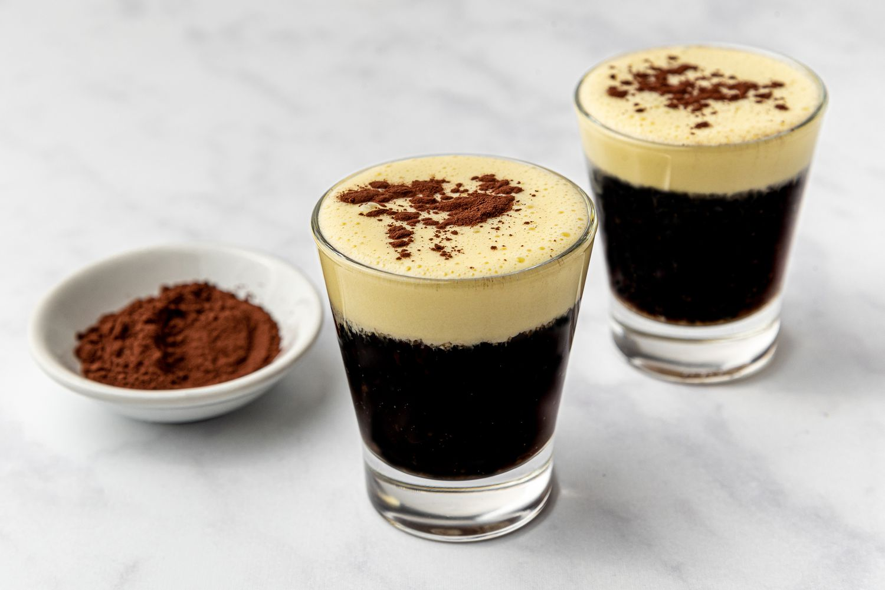

| Home |
Menu |
Articles |
Choose your preffered coffee;
Espresso for only 60₱
 About a century ago, in Milan, a man by the name of Luigi Bezzera is credited with creating the espresso. He was the first to brew coffee using the steam-pressure method, which resulted in a stronger cup of coffee more quickly than ever. Actually, "pressed out coffee" is how the name "caffé espresso" refers to the process of forcing water under extreme pressure through finely ground coffee. The method for producing espresso had been appropriately perfected by the 1940s, making it a beverage that was consumed all over the world.
About a century ago, in Milan, a man by the name of Luigi Bezzera is credited with creating the espresso. He was the first to brew coffee using the steam-pressure method, which resulted in a stronger cup of coffee more quickly than ever. Actually, "pressed out coffee" is how the name "caffé espresso" refers to the process of forcing water under extreme pressure through finely ground coffee. The method for producing espresso had been appropriately perfected by the 1940s, making it a beverage that was consumed all over the world.
Mocha for only 100₱
 The word “mocha” originally refers to a place in Yemen, the city of Al Moka, or Mocha. It is a coastal city along the Red Sea and a major port for trading coffee during the 15th through 18th centuries. The city itself was named "Mocha" after the Arabian Mocha coffee beans that were shipped from the port. These mocha (or moka) beans were grown and harvested in the mountain regions of central Yemen. After being picked and roasted, the moka beans would then be transported to the Al Moka city port. Today, these beans are now known as Arabica coffee beans.
The word “mocha” originally refers to a place in Yemen, the city of Al Moka, or Mocha. It is a coastal city along the Red Sea and a major port for trading coffee during the 15th through 18th centuries. The city itself was named "Mocha" after the Arabian Mocha coffee beans that were shipped from the port. These mocha (or moka) beans were grown and harvested in the mountain regions of central Yemen. After being picked and roasted, the moka beans would then be transported to the Al Moka city port. Today, these beans are now known as Arabica coffee beans.
Americano for only 50₱
 The americano finds its origins in World War II. Interestingly, American soldiers stationed in Italy didn't care for the very strong espresso that was favoured in the country, therefore they tried to recreate their beloved drip coffee from back home by adding water to the espresso shot.
The americano finds its origins in World War II. Interestingly, American soldiers stationed in Italy didn't care for the very strong espresso that was favoured in the country, therefore they tried to recreate their beloved drip coffee from back home by adding water to the espresso shot.
Vietnamese coffee for only 80₱

The history of coffee production in Vietnam is long and storied, beginning in the 1850s with French colonization. In 1857, a French priest brought a solitary arabica tree to Vietnam in the hopes of turning it into a fruitful crop; however, coffee production within the country would come to a complete halt in the 20th Century as a result of the Vietnam War.
Caramel Macchiato for only 120₱
 The Caramel Macchiato debuted in the fall of 1996, back when Starbucks had around 1,000 stores. Hannah Su, a 21-year partner (employee) who developed the iconic drink, said they wanted to create something special to mark Starbucks 25th anniversary.
The Caramel Macchiato debuted in the fall of 1996, back when Starbucks had around 1,000 stores. Hannah Su, a 21-year partner (employee) who developed the iconic drink, said they wanted to create something special to mark Starbucks 25th anniversary.